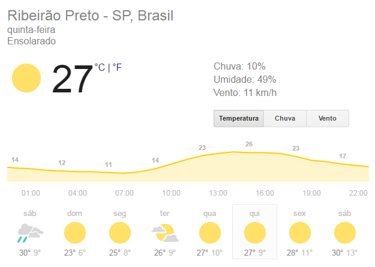
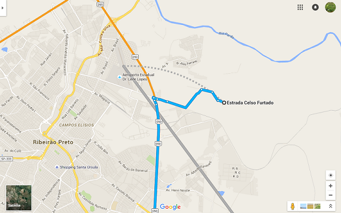

Carta de Boas Vindas
CARTA DE BOAS VINDAS
É com grande satisfação que o Sítio Agroflorestal dá as boas vindas aos participantes da Vivência Agroflorestal Terra Viva: Ecologia, Política, Economia, Emancipação e Comida de Verdade. Nesse documento constam algumas informações importantes, leiam atentamente!
[CAMPING]{.smallcaps}
Os participantes do curso ficarão alojados no Sítio Agroflorestal com área coberta e descoberta para acampar, banheiro seco e chuveiro quente!
ALIMENTAÇÃO
Toda a alimentação do curso será preparada no próprio Sítio Agroflorestal com um cardápio diversificado para vegetarianos, veganos e cuidado com intolerantes a glúten e lactose.
O QUE TRAZER
Camping:
-
Barraca
-
Colchão/Colchonete/Saco de dormir
-
Lençol
-
Cobertor
-
Travesseiro
-
Toalha de banho
-
Utensílios de higiene pessoal
Campo:
-
Bota ou sapato fechado
-
Calça comprida
-
Camisas de manga comprida
-
Chapéu
-
Capa de chuva
-
Protetor solar
-
Repelente
-
Caderno e caneta para anotações
-
Facão
-
Tesoura de poda
-
Serra de Poda
-
Lima
PROGRAMAÇÃO
+------------------------------------------------------------------------------------------------------------------------------------+ | Quarta (20/07) | +--------------------------------------+--------------------------------------+------------------------------------------------------+ | Local | Horário | Atividades | +--------------------------------------+--------------------------------------+------------------------------------------------------+ | Sítio Agroflorestal | 19:00 | Recepção e Jantar | +--------------------------------------+--------------------------------------+------------------------------------------------------+ | Quinta (21/07) | +--------------------------------------+--------------------------------------+------------------------------------------------------+ | Local | Horário | Atividades | +--------------------------------------+--------------------------------------+------------------------------------------------------+ | Sítio Agroflorestal | 7:00 | Recepção e Café da manhã | | +--------------------------------------+------------------------------------------------------+ | | 8:00 | Boas vindas/Abertura | | +--------------------------------------+------------------------------------------------------+ | | 8:30 | Dinâmica de apresentação | | +--------------------------------------+------------------------------------------------------+ | | 9:30 | Café Mundial | | +--------------------------------------+------------------------------------------------------+ | | 11:00 | Conhecendo o Sítio | | +--------------------------------------+------------------------------------------------------+ | | 12:00 | Almoço | | +--------------------------------------+------------------------------------------------------+ | | 13:30 | Práticas de campo | | +--------------------------------------+------------------------------------------------------+ | | 17:00 | Sistematização das práticas | | +--------------------------------------+------------------------------------------------------+ | | 18:00 | Horário Livre | | +--------------------------------------+------------------------------------------------------+ | | 19:30 | Jantar | | +--------------------------------------+------------------------------------------------------+ | | 20:30 | Fundamentos da agrofloresta | +--------------------------------------+--------------------------------------+------------------------------------------------------+ | Sexta (22/07) | +--------------------------------------+--------------------------------------+------------------------------------------------------+ | Local | Horário | Atividades | +--------------------------------------+--------------------------------------+------------------------------------------------------+ | Sítio Agroflorestal | 7:00 | Café da manhã | | +--------------------------------------+------------------------------------------------------+ | | 8:00 | Práticas de campo | | +--------------------------------------+------------------------------------------------------+ | | 12:00 | Almoço | | +--------------------------------------+------------------------------------------------------+ | | 13:30 | Práticas de campo | | +--------------------------------------+------------------------------------------------------+ | | 17:00 | Sistematização das práticas | | +--------------------------------------+------------------------------------------------------+ | | 18:00 | Horário Livre | | +--------------------------------------+------------------------------------------------------+ | | 19:30 | Jantar | | +--------------------------------------+------------------------------------------------------+ | | 20:30 | A importância da agrofloresta na reforma agraria | +--------------------------------------+--------------------------------------+------------------------------------------------------+ | Sábado (23/07) | +--------------------------------------+--------------------------------------+------------------------------------------------------+ | Local | Horário | Atividades | +--------------------------------------+--------------------------------------+------------------------------------------------------+ | Sítio Agroflorestal | 7:00 | Café da manhã | | +--------------------------------------+------------------------------------------------------+ | | 8:00 | Práticas de campo | | +--------------------------------------+------------------------------------------------------+ | | 12:00 | Almoço | | +--------------------------------------+------------------------------------------------------+ | | | Comercialização | | | +------------------------------------------------------+ | | | Dinâmica de encerramento | | +--------------------------------------+------------------------------------------------------+ | | 17:00 | Lanche e Encerramento | +--------------------------------------+--------------------------------------+------------------------------------------------------+ | Os horários são passíveis de alteração, de acordo com a dinâmica do grupo e das condições climáticas | +======================================+======================================+======================================================+
CLIMA, TEMPO

COMO CHEGAR

\ [Referência, como chegar: São Paulo - SP -------> Acampamento Mario Lago, Sítio Terra Viva]{.underline}DESLOCAMENTO
Ônibus:
Chegando na rodoviária de Ribeirão Preto, para chegar ao Assentamento você deverá pegar o seguinte ônibus:
- Ribeirão Verde I ou Ribeirão Verde II (R\$ 3,80)
Ambos passam no terminal ao lado do CPC (Centro Popular de Compras) que fica em frente da rodoviária.
Peça ao motorista para deixa-lo no mercado Mialich. Quando chegar no mercado ligue para o pessoal da organização do curso que iremos buscar você.
- Se já souber o horário de chegada, ligue para que possamos nos organizar com antecedência!
Na rodoviária também tem táxis e moto-táxis que podem traze-lo até aqui!!
ASSISTA AOS VÍDEOS A SEGUIR PARA FICAR POR DENTRO DO PROJETO DE AGROFLORESTA DO ASSENTAMENTO MARIO LAGO: [https://www.youtube.com/watch?v=bL9RylrIwxg]{.underline}
[https://www.youtube.com/watch?v=IK0lKUJZWmY]{.underline}
Para qualquer dúvida estamos à disposição nos contatos abaixo:
Email: sitioagroflorestal@gmail.com
Telefones:
Olívia: (16) 991614103
Murillo: (16) 992473065
Zaqueu: (16) 991817111
Abraços e até breve!!
Equipe Sítio Agroflorestal Terra Viva